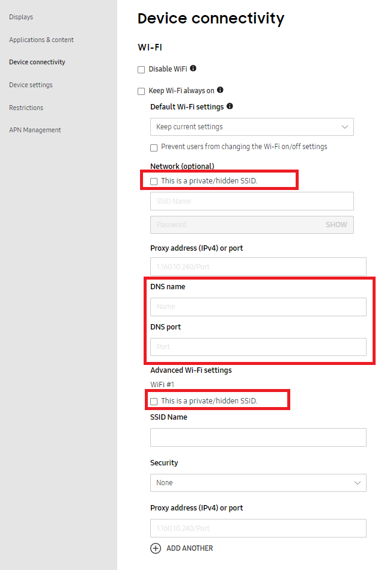
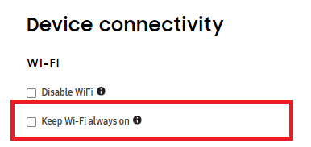
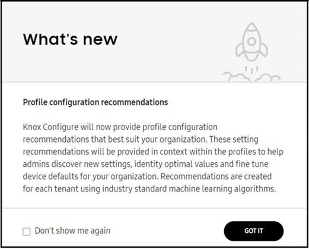

Knox Configure 20.09 release notes
Last updated July 26th, 2023
Hot Key Remapping - Custom Intent Support
This feature addresses admin requests to specify a custom remapping intent as specified by a 3rd party solution willing to consume events sent from KC for applicable device actions. KC should send the intent to the 3rd party based on IT admin’s trigger setting. For example, long press, short press etc.
New options added in Key Press Type include:
- Key Press
- Key Release
The new option added in the Action Type includes:
- Send Intent (Only shown when Key Press or Key Release is selected as the Key Press Type).
A new text field is also now available to capture the intent format added below the package name field. It only displays when Send Intent is selected as Action Type.
The intent can be secured by the following permission in manifest.
android:permission="com.samsung.android.knox.permission.KNOX_CUSTOM_SETTING
Allow different tags in the same bulk upload CSV
Knox Configure supports the tagging of both individual devices and devices in bulk. Devices get the same tag. Tagging is a practical to identify which device is used by which user. However, checking devices one-by-one is not efficient, and while bulk tagging is easier, it would be better still to have devices use different tags.
Beginning with this release, an admin can specify different tags for each device in an uploaded CSV. For example, IMEI1, IMEI2, IMEI3 -> Tag1; IMEI4, IMEI5 -> Tag2; IMEI6 -> Tag6. The overwrite of an existing tag is permitted with the uploaded CSV. The maximum number of tags per device is 10.
QR code provisioning support
This feature supports admin requests to enroll a device into KC using a QR code, in manner resembling how KME supports QR code enrollment currently, using either a reseller or via a direct upload.
- Reseller upload flow – IMEIs need to be uploaded by the reseller and be assigned to a profile that has a QR code associated with it.
- Direct upload flow – For non-validated QR code enrollments, the device does not require a previous reseller upload. Devices can be directly enrolled without a primary device and KDA app.
By default, an IT admin uses the validated reseller upload flow option, but can also utilize the non-validated QR code enrollment option if needed.
Once configured and associated with a profile, a QR icon displays to the right of a listed profile within the KC profiles screen. When selected, additional QR code enrollment options can be defined.
This feature is supported on both mobile devices and tablets, but wearable devices are not supported. Both Setup and Dynamic edition KC profiles are supported. No special license is required for QR code enrollment support in KC.
QR code enrollment is only available on Android 10 and higher devices, and this new option can be added to new and existing Knox 3.4 or above profiles.
Improved enrollment failure handling (error code: 21005)
Currently, when error condition 21005 is encountered enrollment is blocked, as opposed to a more constructive warning issued when a signature mismatch in the uploaded app binary occurs.
To improve productivity with this release, profile configuration and enrollment can now continue when error type 21005 occurs. A generic installation warning message now displays to the admin instead of enrollment being blocked completely. For the end user, enrollment should proceed as is. Previously, an error was displayed blocking enrollment. The warning for a lower version has been removed since KC is ignoring the application’s versioning.
Support additional hidden network and Internet proxy DNS addresses Wi-Fi options - KC for wearables
A hidden network doesn’t display on the device Wi-Fi manager, and a manual connection isn’t possible. It’s often easier to provision the devices with KC instead of sharing the SSID/PSWD with each employee using a wearable. While Knox Configure can push Wi-Fi profiles, there is no hidden profile option or proxy address input unless it is an IP Address.

With this release, support has been added within the Device connectivity screen for additional Wi-Fi options, including hidden network SSID and Internet proxy DNS addresses.
This feature is supported on wearable Knox Configure devices only, supporting either Setup or Dynamic edition profiles. For more information, go to: Setup edition or Dynamic edition for wearable devices.
Support additional Wi-Fi options (Wi-Fi Always ON) - KC for wearables
This feature enables wearables deployed in factories, and other large areas, to remain connected to their preferred corporate Wi-Fi network so urgent updates pushed by IT are received on time.
With this release, an option has been added within the Device connectivity screen to Keep WiFi always on. When selected Wi-Fi remains continuously on, even when the battery is low.

Keep in mind, enabling this setting prevents Wi-Fi from being turned off under any circumstances. Power saving mode and Airplane mode are disabled when this option is selected, and once set, users are unable to change the Wi-Fi on and off settings. This option is available to both Setup and Dynamic edition KC for wearable profiles.
This feature is supported on wearable Knox Configure devices only, supporting either Setup or Dynamic edition profiles. For more information, go to: Setup edition or Dynamic edition for wearable devices.
Offline deactivation - KC for wearables
This feature addresses KC wearable admin requests to factory reset a wearable device after temporary usage or when no longer needed. This request becomes problematic when the Bluetooth connection between the paired phone and the wearable is broken, and there is no way for WKC to send a wipe and reset command and factory reset the wearable via the recovery mode.
To address this issue, the WKC agent on the wearable will be invoked to perform a factory reset manually, even if there is no current Bluetooth connectivity.
Profile configuration recommendations
Going forward, Knox Configure will provide profile configuration recommendations and caveats that may prove extremely useful for your organizations profile configuration and deployment objectives. These useful suggestions will also assist admins to both discover and utilize new features and settings. These recommendations are created uniquely for customers using machine learning algorithms.

Back to release notesIs this page helpful?